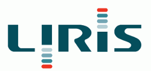

I'm Marie Le Guilly, currently working as a computer science teacher. After a few years as a data science researcher, I decided to dedicate my carreer to share my knowledge on the topics I'm passionnate about. My main interest is on artifical intelligence and machine learning with Python, but I also teach and create lessons on Java programming, databases and mathematics.
About Me
Professional Experience
Trainer -
ENI Ecole Informatique
January 2022 - Present
Teacher for computer science students

PostDoc -
Université Lyon 1
with
LIRIS Lab
PostDoc -
Université Lyon 1
with
LIRIS Lab
2021
Apprentissage automatique pour la cybersécurité
Research internship during PhD
Univeristy of Waterloo
with
LIRIS Lab
September 2018 - November 2018
Research internship at the Data Systems group, with Prof. Ihab Ilyas
Teacher -
INSA-Lyon
September 2017 - Present
Introduction to programmation, and java programming. Undergraduate students.
Research Intern -
LIRIS Lab
January 2017 - June 2017
Research internship on data exploration using SQL query completion.
Research Intern -
Dodin Campenon Bernard (VINCI) and LIRIS Lab
June 2016 - September 2016
Analysis of the data from a boring machine, prediction of soil compaction based on the machine’s parameters
Research Intern -
Morpho (Safran)
June 2015 - August 2015
Development of a test platform for biometric data
Talks
May 2018 ISIP Workshop (Fukuoka, Japan)
Could Functional Dependencies Help to Identify Balanced Classification Datasets ?
September 2017 Decade Symposium (Lyon, France)
SQL query completion for data exploration
About My PhD
Title
Guide data selection for predictive models (Link to dissertation)
Abstract
Databases and machine learning (ML) have historically evolved as two separate domains: while databases are used to store and query the data, ML is devoted to predictive models inference, clustering, etc. Despite its apparent simplicity, the “data preparation” step of ML applications turns out to be the most time-consuming step in practice. Interestingly this step encompasses the bridge between databases and ML. In this setting, we raise and address three main problems related to data selection for building predictive models. First, the database usually contains more than the data of interest: how to separate the data that the analyst wants from the one she does not want? We propose to see this problem as imbalanced classification between the tuples of interest and the rest of the database. We develop an undersampling method based on the functional dependencies of the database. Second, we discuss the writing of the query returning the tuples of interest. We propose a SQL query completion solution based on data semantics, that starts from a very general query, and helps an analyst to refine it until she selects her data of interest. This process aims at helping the analyst to design the query that will eventually select the data she requires. Third, assuming the data has successfully been extracted from the database, the next natural question follows: is the selected data suited to answer the considered ML problem? Since getting a predictive model from the features to the class to predict amounts to providing a function, we point out that it makes sense to first assess the existence of that function in the data. This existence can be studied through the prism of functional dependencies, and we show how they can be used to understand a model’s limitation, and to refine the initial data selection if necessary.
Publications
Journals
Evaluating classification feasibility using functional dependencies, Marie Le Guilly, Jean-Marc Petit and Vasile-Marian Scuturici, Transactions on Large-Scale Data and Knowledge-Centered Systems (TLDKS), 27 pages (to appear) Access paper
A First Experimental Study on Functional Dependencies for Imbalanced Datasets Classification, Marie Le Guilly, Jean-Marc Petit and Vasile-Marian Scuturici, « Communications in Computer and Information Science » series, Springer, Revised Selected Papers from the International Workshop ISIP, Japan, 2018, 17 pages
International conferences
Contextualisation of Datasets for better classification models: Application to Lyon Airbus Helicopters Flight Data 2020, Marie Le Guilly, Daouayry Nassia, Pierre-Loic Maisonneuve, Ammar Mechouche, Jean-Marc Petit and Marian Scuturici, 24th European Conference on Advances in Databases and Information Systems (ADBIS), 10 pages (to appear)
Attempt to better trust classification models: Application to the Ageing of Refrigerated Graz Transport Vehicles (industrial paper), Marie Le Guilly, Claudia Capo, Marian Scuturici, Jean Marc Petit, Rémi Revellin, Jocelyn Bonjour, Gérald Cavalier 25th International Symposium on Methodologies for Intelligent Systems (ISMIS’20), 10 pages (to appear) Access paper
ExplIQuE: Interactive Databases Exploration with SQL (demo paper), Marie Le Guilly, Jean-Marc Petit, Vasile-Marian Scuturici and Ihab Ilyas, 28th ACM International Conference on Information and Knowledge Management, CIKM 2019, China, 2019, 4 pages Access paper
Ageing of refrigerated transport vehicles: development of a numerical predictive model, Marie Le Guilly, Claudia Capo, Léo Pape, Marian Scuturici, Jean Marc Petit, Rémi Revellin, Jocelyn Bonjour, Gérald Cavalier, 6th IIR conference on sustainability and the cold chain, 9 pages (to appear)
National conferences
Evaluation de la faisabilité de classification en utilisant les dépendances fonctionnelles, Marie Le Guilly, Jean-Marc Petit and Vasile-Marian Scuturici, BDA 2019, 35ème conférence sur la Gestion de Données — Principes, Technologies et Applications, 12 pages
ExplIQuE : Exploration Interactive de Bases de Données en SQL, Marie Le Guilly, Jean-Marc Petit, Vasile-Marian Scuturici and Ihab Ilyas, BDA 2019 35ème conférence sur la Gestion de Données — Principes, Technologies et Applications, 4 pages
Partitioning queries for data exploration using query extensions, Marie Le Guilly, Ihab Ilyas, Jean-Marc Petit and Vasile-Marian Scuturici, BDA 2018, 34ème conférence sur la Gestion de Données — Principes, Technologies et Applications
Langages de requêtes interactifs pour l’exploration de données, Marie Le Guilly, BDA 2017, 33ème conférence sur la Gestion de Données — Principes, Technologies et Applications (article Doctorant)
Retour d’expérience sur l’analyse des données d’un tunnelier, Marie Le Guilly, Jean-Marc Petit, Vasile-Marian Scuturici, BDA 2017 33ème conférence sur la Gestion de Données — Principes, Technologies et Applications
Patents
Completion de requêtes SQL ; Marie Le Guilly, Jean-Marc Petit, Vasile-Marian Scuturici, French patent FR1757682
Technical Skills
Programming
Python, Java, C/C++
Databases
PL/SQL, MysQL, Oracle
Tools
Latex, Git, SVN